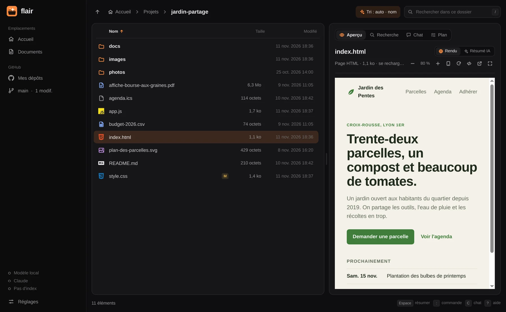

Suite flair
Trois apps de bureau natives pour Arch Linux : fichiers, code et web. Elles partagent l'accent, les réglages et l'IA, locale ou en ligne.
# une fois le dépôt suite-flair ajouté
sudo pacman -Syu suite-flair
Voir la page de la suite